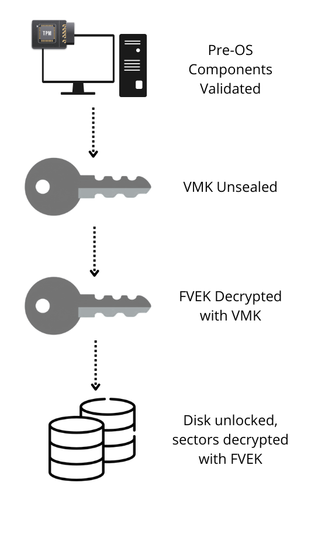
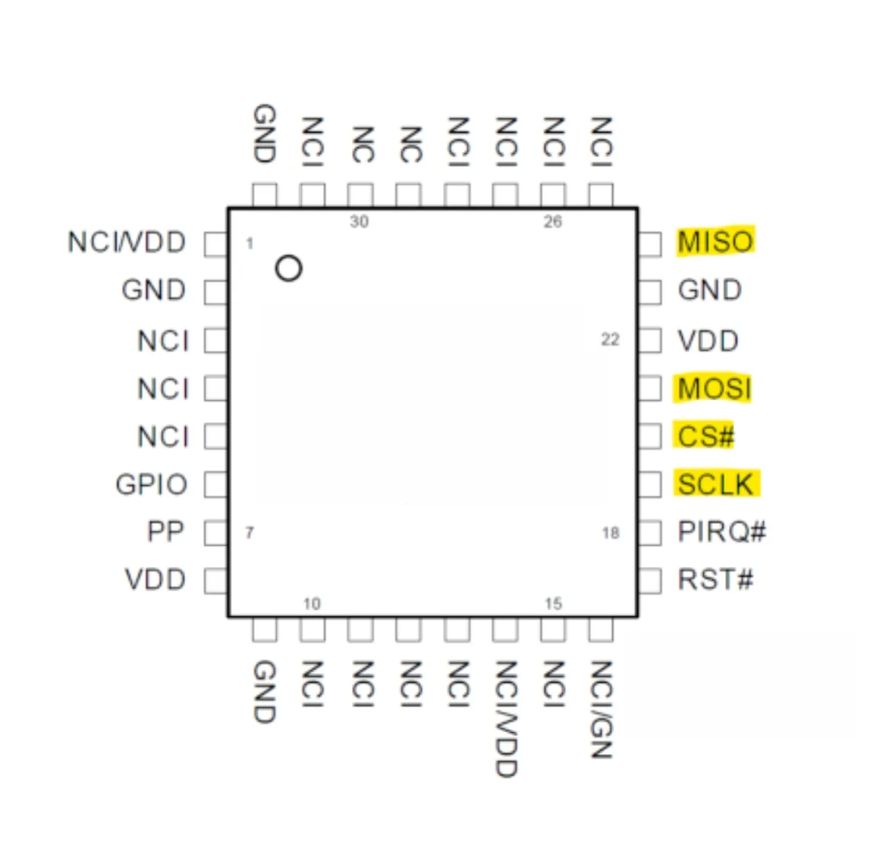
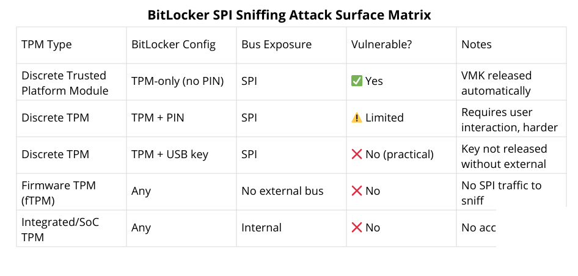
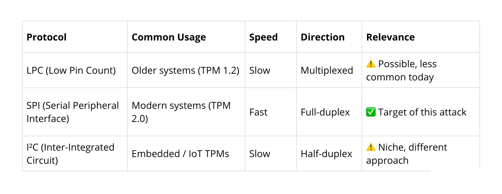
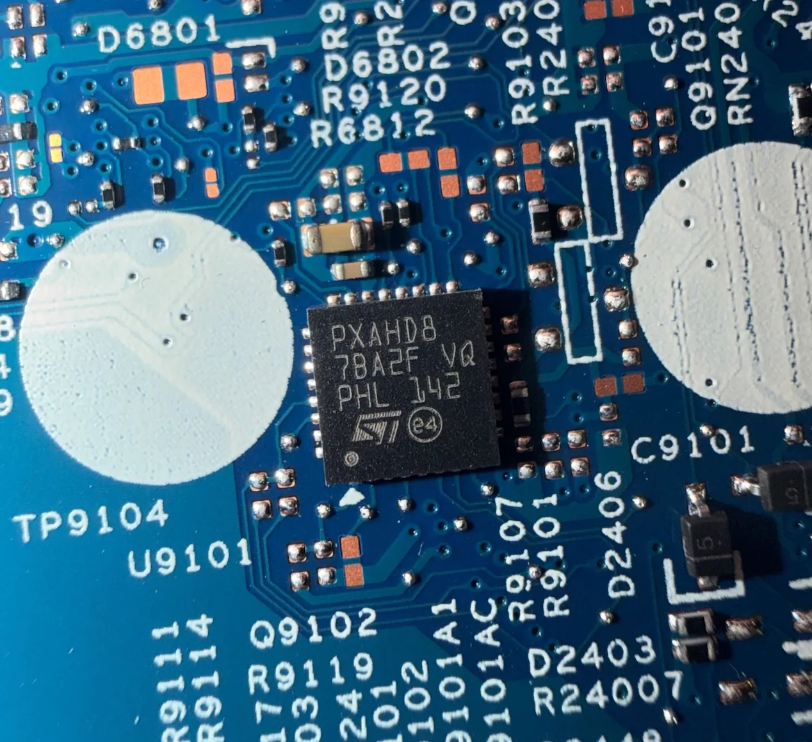
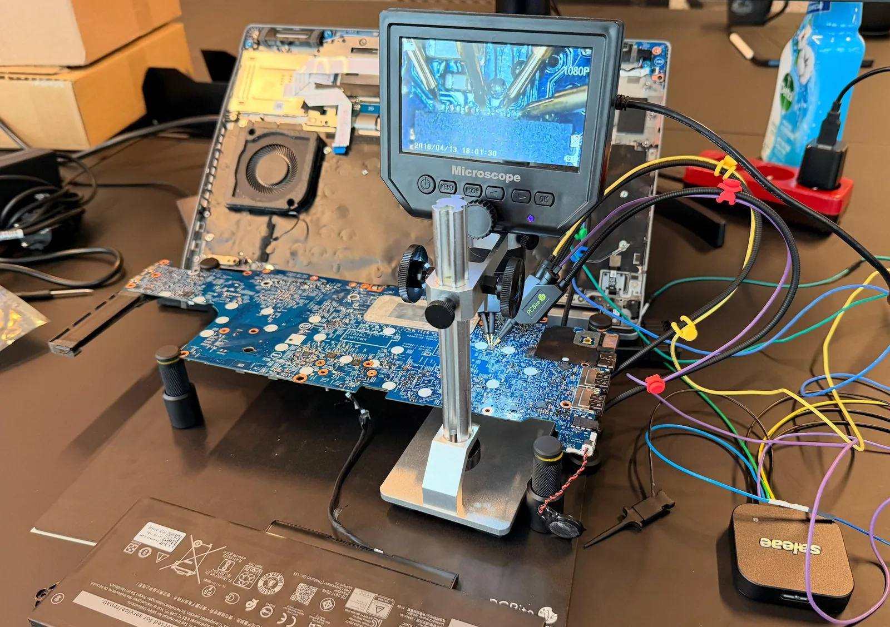
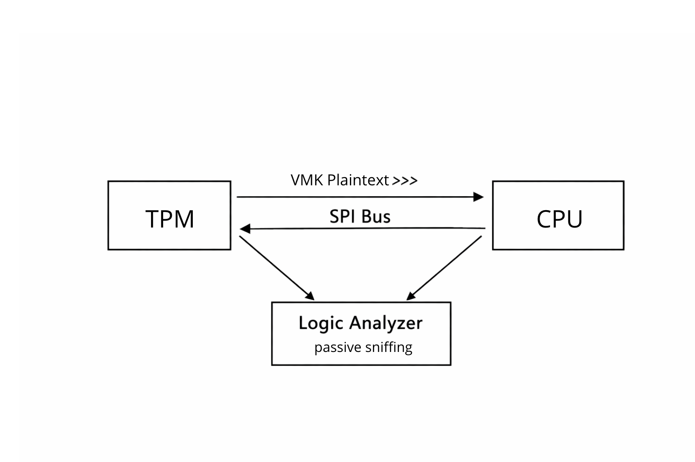
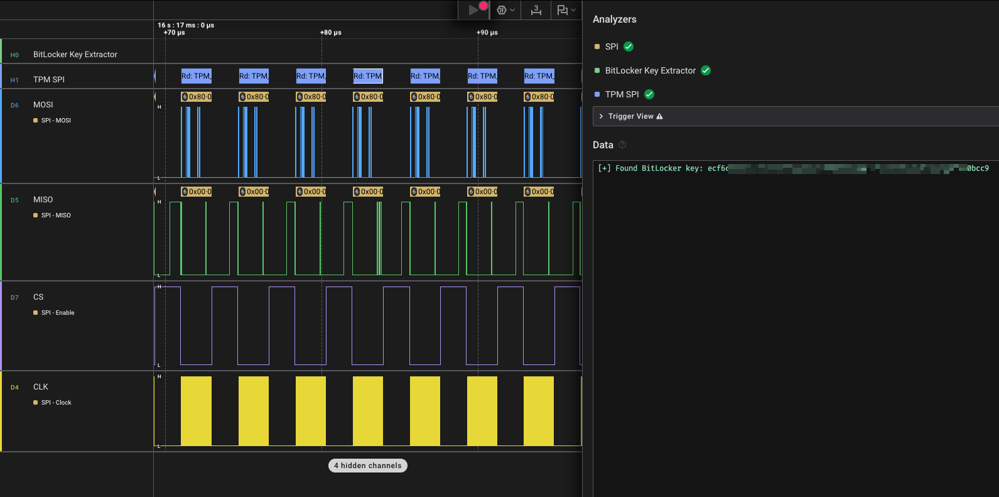
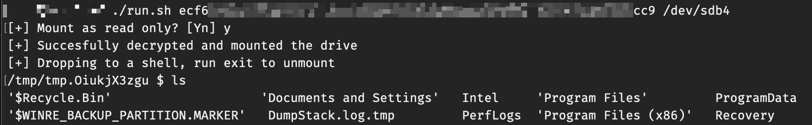

BitLocker Meets Hardware Reality
Microsoft BitLocker is widely used to protect data at rest, designed to prevent attackers with physical access from reading disk contents without the proper keys.
But as always, the real story is in the implementation.
In this post, we’ll show how (under the right conditions) it’s possible to intercept the BitLocker Volume Master Key (VMK) during boot and use it to gain full read and write access to the encrypted disk.
Where the Keys Live (and Which One Matters)
BitLocker’s crypto is solid, the interesting part is how the keys are handled.
At the bottom, you have the FVEK. This is the key that actually encrypts the disk data. Since it’s used constantly, it needs to be available while the system is running. The FVEK is encrypted with the Volume Master key (VMK). This is the key we’re after. If you can get the VMK, you can decrypt the FVEK and from there, the entire disk.
That VMK is protected by “key protectors.” In the default TPM-only setup, it’s sealed inside the Trusted Platform Module (TPM) and automatically released during boot if everything looks “trusted.”
No user interaction, no prompt, just the TPM handing over the VMK early in the boot chain. And that exact moment? That’s what we’re going after.

Inside the TPM: Trust, Measurements, and Key Release
A Trusted Platform Module (TPM) is a small chip that securely stores keys and handles crypto operations.
For BitLocker, it holds the VMK in a sealed state. During boot, the system is measured (firmware, bootloader, config). If everything matches what’s expected, the TPM releases the VMK.
In systems with a discrete TPM, this chip is separate from the CPU and communicates over SPI.
Which means one important thing: the VMK doesn’t stay inside the TPM, it gets sent to the CPU.
And if it’s sending it… we can sniff it.
SPI Bus Basics - Where Data Travels
The Serial Peripheral Interface (SPI) is a simple, fast protocol used for communication between chips, like the CPU and a discrete TPM.

It uses four main lines:
- MOSI (data to the TPM)
- MISO (data from the TPM)
- CLK (clock signal)
- CS (chip select)
Data is sent in sync with the clock, and both sides can transmit at the same time.
The important part: SPI has no built-in security. No encryption, no authentication, just raw data on the wires.
So if you hook onto those lines you can see exactly what’s being sent.
Am I a Target? Assessing Exposure
Short answer: it depends on the hardware and configuration.
This attack targets systems with a discrete TPM connected over SPI. In that case, the VMK is sent over the bus during boot, so it can be sniffed.
If you’re using a firmware TPM (fTPM), there’s no external bus, so this doesn’t apply.
Also important: BitLocker config. TPM-only setups (no PIN) will automatically release the VMK during boot, ideal for this attack. Add a pre-boot PIN, and you block that behavior.
In short, you’re looking for:
- Discrete TPM
- SPI bus
- BitLocker without PIN
That’s your target.

Test Setup: Target Hardware Overview
The target device was a Dell Latitude with a discrete Trusted Platform Module 2.0, communicating over Serial Peripheral Interface.
We focus on SPI, it’s the default for modern discrete TPMs and, from an attacker’s perspective, the easiest bus to tap reliably.
Other platforms may use different interfaces:

Worth mentioning: Dell systems have their quirks. Figuring out the minimal hardware required to boot took some trial and error. Turns out, at least the battery and display need to be connected for the system to power on.
Gear Check: What You’ll Need
Here is what we are using:
- Basic tools (tweezers, maybe a microscope if the board is tight)
That’s enough to tap the SPI lines without soldering.
Finding the Right Wires (TPM and SPI lines)
First step is finding the Trusted Platform Module on the board.

Look for a small dedicated chip near the PCH/CPU. From there, identify the SPI pins either via:
- Datasheet of the TPM chip
- Boardview/schematics (if you have them)
- Or tracing the PCB lines
You’re interested in the suspects: MOSI, MISO, CLK, CS, and GND.
Tapping the Bus (Without Breaking It)
Once you’ve got the pins, it’s just a matter of carefully attaching probes:
- Connect probes to MOSI, MISO, CLK, and CS
- Don’t forget a solid ground reference
- Keep wires short to avoid signal noise
No soldering needed if your probes are good, just steady hands.

Listening In: Capturing TPM Traffic
With the probes in place, we capture the boot sequence using Saleae Logic 2.
Configure the channels (MOSI, MISO, CLK, CS), set an appropriate sample rate (highest possible), set the correct voltage (Based on chip datasheets) and trigger on boot. You’re interested in the early communication between the CPU and the Trusted Platform Module, that’s where the VMK gets transferred.

Hunting the VMK
Now for the fun part.
Instead of manually digging through SPI traffic, we can use bitlocker-spi-toolkit to do the heavy lifting.
This Github project includes two extensions for the logic analyzer software: A decoder for TPM SPI transactions and a VMK extractor. This module scans the capture for VMK patterns, essentially running a regex-style search over the TPM responses, similar to a grep on raw bus data:
2c000[0-6]000[1-9]000[0-1]000[0-5]200000
When it finds a match, it automatically extracts and reconstructs the VMK from the stream.

From Key to Access: Decrypting the Disk
Once you’ve got the VMK, the rest is straightforward.
Pull the disk from the target system and connect it to your own machine. The bitlocker-spi-toolkit repo includes a helper script (run.sh) that wraps around dislocker.
Feed it the VMK, point it at the disk, and it handles the decryption.
At that stage, BitLocker is effectively out of the picture, you’re mounting the volume with full read and write access.

Post-Exploitation
At this point, you’re not just reading the disk, you own it.
With full read/write access, you can modify the filesystem. The classic move of swapping accessibility binaries like sethc.exe (Sticky Keys) or utilman.exe for cmd.exe no longer lands: the trick is well known, tamper protection flags and reverts the swap, and on current builds the console flashes open and closes immediately.
A quieter route is editing the SAM hive offline: blank out an existing local account's password, or create a local administrator of your own, and log in normally on the next boot.
From there, it’s game over: dump credentials, create admin users, or pivot further into the environment.
Defenses: Making This Attack Hurt
Even the best crypto can’t protect keys that travel in the clear, but there are ways to make this attack much harder:
- Enable Pre-Boot Authentication - Add a PIN or USB key on top of the TPM. Now the VMK won’t just drop during boot, and attackers can’t passively sniff it.
- Pick Modern Hardware - Firmware TPMs (fTPM) or CPU-integrated TPMs hide the bus entirely, leaving nothing to tap.
- Chassis Intrusion Detection - On Dell systems, you can monitor if the case has been opened. TPM PCRs can be updated to halt BitLocker key release if tampering is detected. Works on the latest OptiPlex, Latitude, and Precision models (when enabled via GPO).
In short: this attack is still possible in theory, but these measures turn it from “easy pickings” into a serious challenge. Keep the keys off the bus, require user interaction, and monitor for tampering - suddenly the VMK isn’t so easy to grab.